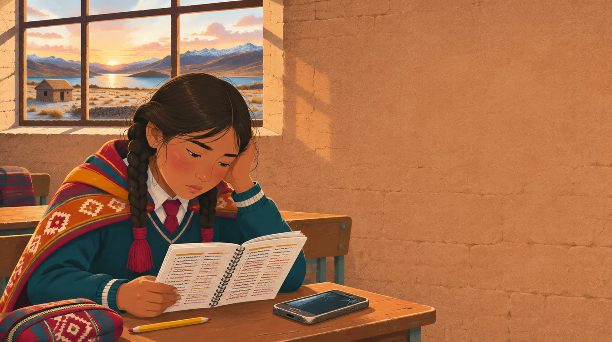
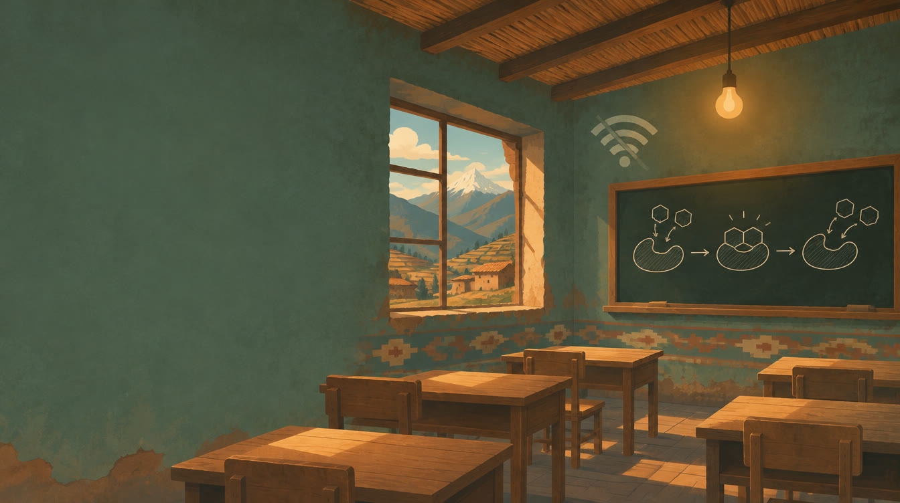
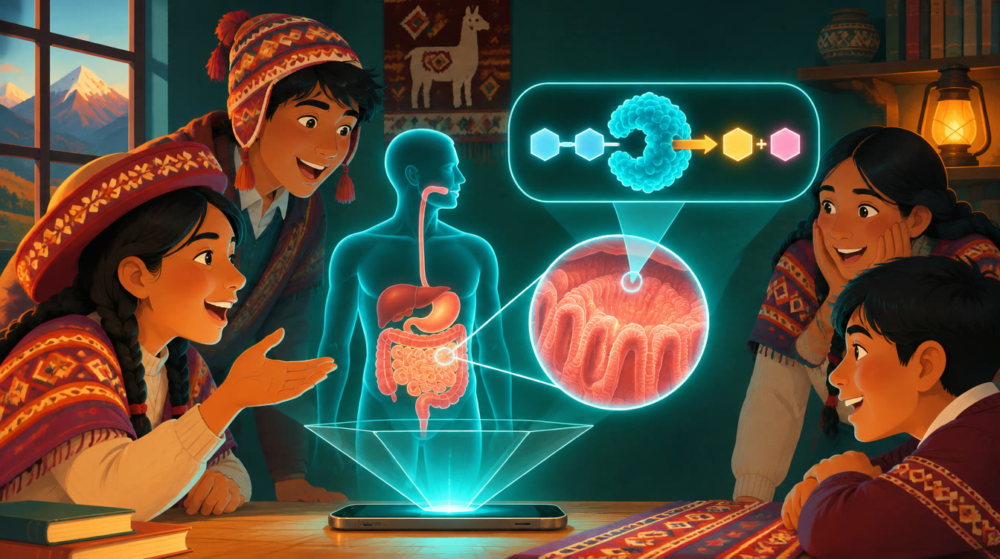
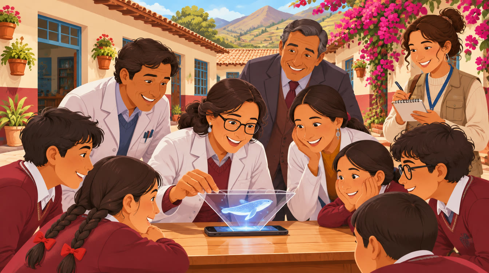
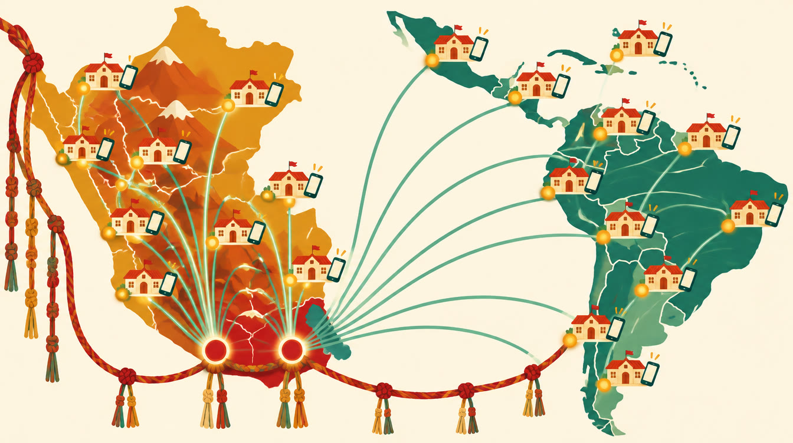
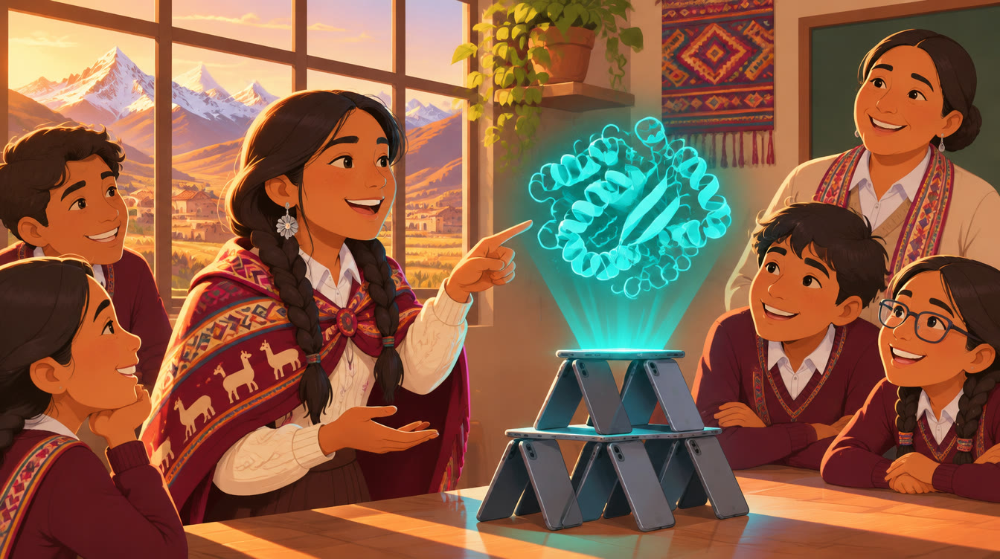

Les presento a María.
- Tiene 14 años y estudia en un colegio de la sierra de Puno.
- Mañana debe explicar cómo la lactasa rompe la lactosa de la leche.
- María nunca ha visto una enzima: en su colegio no hay laboratorio y la señal no llega al aula.
- Así que memoriza… y la próxima semana lo olvida.
- Pero hay algo que María sí tiene: el celular de su mamá.

María no es un caso aislado.
0%
Fuente: BID
0pts
Fuente: OCDE, PISA 2025
El celular llegó. El laboratorio, no.
Fuente: INEI y MINEDU (según guion del equipo)
Rikuy significa “ver”.
En quechua. Rompe tres esquemas.

Si alargamos la cuerda, ¿irá más rápido o más lento?
- RikuySi alargamos la cuerda, ¿el péndulo irá más rápido o más lento?
- Grupo 3No sé.
- RikuyPista: cuenta cuánto tarda en ir y volver. Prueba cambiando la longitud.
- Grupo 3Pon la longitud en dos metros.
- El periodo pasa de 1,4 a 2,8 segundos. Lo descubrió el alumno, no se lo dijeron.

Video de la pirámide en vivoLongitud
Periodo
T = 2π√(L / g)
Ya está en un aula.
- ONG PRISMAnos abrió las puertas
- Colegio Sor Ana Circaaula real
- 3 docentes + directorciencias: física y biología
“Rikuy representa un valioso apoyo para fortalecer la enseñanza y enriquecer el aprendizaje de nuestros estudiantes. Porque educar no consiste únicamente en transmitir conocimientos, sino en brindarles las herramientas y oportunidades para desarrollar su potencial, construir su futuro y contribuir al desarrollo de nuestro país.”
El código es abierto; el servicio se paga.
El colegio privado paga 80 soles por alumno al año, menos del 2% de una pensión económica.
al mes 10 colegios privados cubren los costos del mes
Supuesto: 450 alumnos por colegio. Costo mensual ≈ S/ 28 900 (S/ 520 mil en 18 meses).

Con PRISMA entramos al aula.
- El docente lo usa gratisy lo comparte
- El colegio contrataS/ 80 por alumno al año
- Con resultados, firma la UGELS/ 15 por alumno
Lo que vive de donaciones se apaga. Aquí cada colegio que paga sostiene un aula rural gratis.
Buscamos
S/ 0 mil
18 meses
- Equipo
- Contenido
- 3 pilotos
- Ventas
Con diez colegios privados ya cubrimos nuestros costos.

Para que mañana María no memorice la lactasa, sino que la vea, la comprenda y la explique con sus propias palabras.
Ver para entender, comprender para transformar.
Rikuy Lab. Muchas gracias.
Todo el sistema
Arquitectura
Toca la imagen para ampliarla.